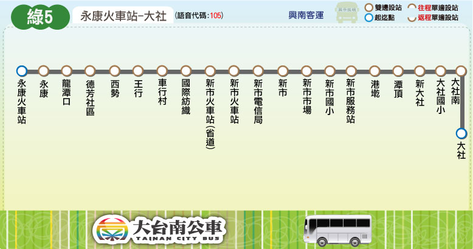

Tainan Bus for FUN
路線圖
路線資訊
票價表
時刻表
轉乘資訊
大台南公車 ─ 綠5 路線圖
Tainan Bus Green 5, Route Map

大台南公車 ─ 綠5 路線資訊
Tainan Bus Green 5, Route Information
起訖點
永康火車站 － 新市 － 大社
營運公司
興南客運
首／末班車發車時刻
往 大 社 ：08:00／18:40
往 永康火車站：07:25／17:50
班距
固定班次
收費方式
里程計費
公車動態資訊
票價表
Ticket Fare
全票
半票
投現
-
-
電子票證
-
-
時刻表
Bus schedule
大台南公車－綠5 主要轉乘點資訊
Tainan bus Green 5, Transfer information
永康火車站
台鐵永康站
綠5
紅10
永康
綠幹線
新市火車站
台鐵新市站